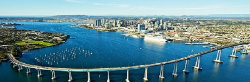
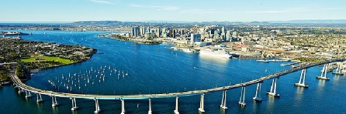

I was born on February 14, 2001. Yes, I’m a Valentine baby, born in Edmond, Oklahoma, then moved to sunny Florida just six months after I was born. We moved to Pensacola, Florida because of my dad’s job in the Navy as a pilot. In Florida, my brother, who is two years younger than me, and my sister, who is four years younger than me, were both born. My family, friends, and I had so much fun living in Florida and still have awesome memories of our fun times today. After moving to Greenville before I started kindergarten, we have lived in the same house for ten years now, and have met some amazing people in our neighborhood and in the area.


Today, I still love to play soccer, swim on the summer swim team, go to the beach, hang out with friends, listen to music, and love taking pictures. Right now, I am playing CESA Academy soccer and love it. In the spring, I hope to play soccer for J.L. Mann like this past year. I have learned a lot, made new friends, and have had so much fun playing soccer over the years. Similarly, I love swimming on my summer SAIL swim team with my friends and doing fun activities and going on adventures with them in the summer. Like most teens, I love hanging out with friends, laughing, and having a good time. Also like most teens, I love listening to a variety of music; everything from pop to country to hip hop/rap. Last but not least, one of my favorite hobbies is photography. I love taking pictures of pretty scenery, such as the beach, lake, and mountains, my friends and family, and other miscellaneous things.
Currently, I am in tenth grade, my brother is in eighth grade, and my sister is in sixth grade. We have a Golden Retriever, DJ, who has so much energy and is so spoiled, he is always the center of attention. Having three kids and a dog in the family, we have a very busy and fast-paced lifestyle. My siblings and I all play sports, so my parents are always on-the-go. We have practices on weekdays and occasional games, plus on the weekends we have Clemson football games and additional sporting events. On top of everything, we have school, which keeps us super busy, even without sports. Even if life does move fast in my family, I wouldn’t have it any other way because I’m almost never bored and have had so many adventures with my friends and family.
 

The future is one of my favorite topics because I have control of the future. How I act now and the decisions I make now affect the future. My goals for the future include going to college at Clemson, studying finance or accounting, moving to California after college to become a Navy SEAL, and then settling down after a few years in the Navy to have a family. I want to go to Clemson because I love the campus, the people, and the sports. I have grown up being a Clemson fan because my dad’s dad taught at Clemson for many years and live very close to Clemson on Lake Hartwell. I want to move to the San Diego area in California after college because I love California and the basic training for Navy SEALs is in that area as well. I know it’s far away, but I want to move to California to meet new people, gain new experiences, and start a career. Years after being in the Navy for a few years, I want to retire from the Navy and settle down with a family. I am excited for the future, both far and near, because sometimes change and starting over are good things. I want to focus on being a good person, experiencing the world, and having a good career and education.